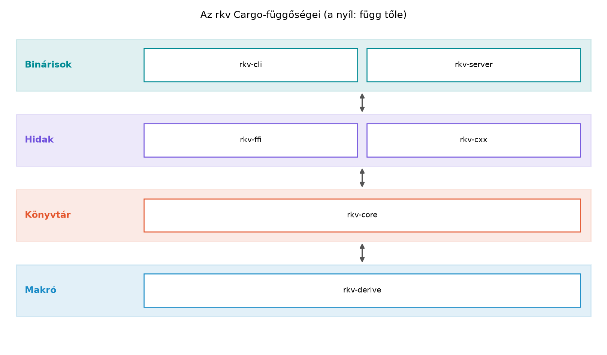

A könyv célközönsége nem az a fejlesztő, aki most ismerkedik a
programozással, hanem az, aki már több ezer sornyi modern C++-t írt:
ismeri a RAII-t, a mozgatási szemantikát, a unique_ptr és
shared_ptr belső működését, a sablonokat, az STL-t, a
lambdákat és a std::thread alapú párhuzamosságot. Éppen ez
a tudás jelenti a csapdát is: Rustban a legtöbb C++-reflex értelmezhető,
de gyakran éppen az ellenkezője az idiomatikus megoldás. A C++-ban az
alapértelmezett másolás, az aliasolt, módosítható állapot, a
nullptr mint üres érték, a kivételek és az implementációs
öröklés mindennaposak; a Rust ezeket a forrásait a legtöbb hibának
szándékosan eltávolítja. Ez az útmutató arra készít fel, hogy a
C++-tudásodat ne a nyelv „legyőzésére”, hanem a Rust-modell megértésére
használd. Az rkv mintaprojekt pedig ugyanazt a tanulási utat járja be,
mint egy valódi C++-ról Rustra migráló szolgáltatás: CLI-ből könyvtárrá
fejlődik, hibakezeléssel, perzisztens tárolóval, párhuzamos tesztekkel,
hálózati szerverrel, végül C++-ból hívható FFI-réteggel.
Definíció. A könyvben a továbbvitt eredmény olyan típus, trait, modul, függvény vagy mintaprojekt-döntés, amelyet az alfejezet kidolgozásakor pontosan meghatározott néven és viselkedéssel hozunk létre az rkv workspace-ben vagy a labor-könyvtárban, és amelyre a későbbi alfejezetek a megadott néven hivatkoznak. Ha egy későbbi alfejezet mégis módosítja a korábbi döntést, akkor a módosítás és annak indoklása maga is tananyag; a refaktorálás nem hiba, hanem a fejlődés természetes része.
Szabály. A könyv teljes tanulási íve egyetlen
végigvitt mintaprojektet épít: az rkv kulcs–érték
tárolót. Minden labor ennek egy darabját készíti el vagy dolgozza át. A
labor-könyvtár a ~/rust-labor/ könyvtár, az rkv
Cargo-workspace a ~/rust-labor/rkv/ alatt található. Két
dolgot külön kell tartani: a Cargo-workspace tagjait
(Rust-crate-ek, ezeket a cargo metadata listázza) és a
repository többi könyvtárát (nem Rust-crate-ek, saját
build-útvonallal).
A Cargo-workspace tagjai (a members lista elemei):
rkv-core – könyvtár crate, a tároló, a parancsok, a
hibatípusok és a Storage trait;rkv-cli – bináris crate, a parancssori felület clap
alapú argumentumelemzéssel;rkv-server – bináris crate, a tokio TCP-szerver és a
szöveges protokoll;rkv-ffi – C ABI-t exportáló könyvtár, amelyet C-ből és
C++-ból lehet hívni;rkv-cxx – a cxx crate-tel épített híd,
amely C++-ból teszi elérhetővé a tárolót (mérföldkő: C++-együttműködés a cxx crate-tel, a workspace-be
itt kerül be);rkv-derive – procedurális makró crate, a
CommandName derive implementációval.A repository további, nem Cargo-tag elemei:
cpp-client/ – C++ klienskód
(~/rust-labor/rkv/cpp-client/). Saját build-útvonala van: a
g++ (vagy CMake) a Rust oldal által előállított
target/release/librkv_cxx.a statikus könyvtárra és a
generált lib.rs.h fejlécre épül, tehát Rust-könyvtári
függősége van, de a cargo metadata nem listázza;Cargo.lock és a gyökér Cargo.toml – a
workspace közös fájljai; a rust-toolchain.toml a
~/rust-labor/ labor-gyökérben van, ezért minden
testvér-labor örökli.A záróprojekt (Záróprojekt: az rkv teljes
rendszerként) ugyanezt a hat tagot és a külön
cpp-client/ könyvtárat használja; a
cargo metadata --no-deps csak a hat Rust-crate-et
mutatja.
Szabály. A C++-ismeretek három csoportba sorolhatók:
unique_ptr), a generikus programozás (sablonok →
trait-ek), a smart pointerek, a const-helyesség
alapgondolata, a memóriamodell, az atomikus műveletek és a nulla
költségű absztrakció fogalma. Ezek a Rustban is hasonlóan működnek, bár
szintaktikailag és a kényszerítő szabályokban eltérhetnek. A mozgatás
külön figyelmet kér: a C++ std::move csak egy
xvalue-konverzió, az állapotot a tényleges mozgató konstruktor vagy
értékadás határozza meg, és a forrásobjektum érvényes, de nem
meghatározott állapotban marad (a unique_ptr-nél
garantáltan nullptr, amelynek dereferálása UB). A Rust
mozgatása ezzel szemben destruktív: a forrás statikusan
érvénytelenné válik. Az automatikusan generált mozgató műveletek és a
Rule of Zero C++-ban közelebb viszik a két modellt, de a forrás
használhatósága ott is futásidejű kérdés marad.null referencia (a hiányt az
Option<T> típus fejezi ki; nyers mutató lehet null,
de csak unsafe blokkban dereferálható), nincs kivétel,
nincs implementációs öröklés, nincs függvénytúlterhelés; a fordítási
hibák nem akadályok, hanem a nyelv tanításának eszközei.Send/Sync automatikus trait-ek, az async/await
a Future típussal, a Pin, a
no_std Rust és a makrórendszer ebben a formában.A könyv nem mellékel nyilvános rkv-repositoryt: a mintaprojekt a
fejezetek Kódblokk jelölésű blokkjaiból áll össze, a verziókat
a rust-toolchain.toml és a Cargo.lock rögzíti.
Ezért ajánlott a saját repositoryt azonnal létrehozni
(git init), és minden alfejezet ellenőrzési pontja után
commitolni és címkézni (például git tag r034), a
Cargo.lock-kal együtt. Az egyes alfejezetek Ellenőrzési
pont szakasza adja meg, milyen állapotban kell lennie a
munkafának.
Három szintet különböztetünk meg. (1) A kötelező
lánc: a Kódblokk jelölésű laborblokkok és azok a
feladatmegoldások, amelyekre a következő fejezet kifejezetten épít.
Ilyen például a SharedStore (a Szálak,
Send és Sync 3. feladata, amelynek megoldása a Mutex, RwLock, csatornák és a megosztott rkv
alapja): ezt a feladatot a megoldás kódja alapján mindenképp be kell
vezetni. (2) A választható gyakorlás: a többi
„Implementáció az rkv-ban” feladat, például a Session
typestate az rkv-serverben; ennek hiánya nem töri meg a
láncot, és a záróprojekt szervere nem használja. (3) A külön
próba: az önálló kisprojektek
(~/rust-labor/rNNN/), amelyek nem részei az rkv-nek.
Ahol egy blokk csak a változás helyét mutatja (...
kommenttel), a művelet mező mondja meg, hogy teljes csere,
részleges csere vagy külön próba; ha nem teljes fájlcsere, a blokkban a
... jelölt részeket a korábbi állapotból kell
megtartani.
A cím „zero to hero” ígérete a tapasztalt C++-fejlesztő számára a
következő, ellenőrizhető kompetenciákra szól: (1) a tulajdonjog-,
kölcsönzés- és élettartam-szabályok biztos alkalmazása, (2) trait-alapú,
generikus API tervezése és hibakezelése, (3) szálak és
async (tokio) használata korrekt leállással, (4) tesztelés,
benchmark és dokumentáció, (5) C ABI-s és cxx-es
együttműködés. Nem vállalja: az unsafe kód
formális bizonyítását (a Miri és a # Safety szerződések
gyakorlata van, nem teljes verifikáció), a hardveres/beágyazott
célplatformon való tényleges futtatást, és több build-útvonal (Windows,
macOS, keresztfordítás) teljes körű támogatását; ezek a megfelelő
fejezetekben kitekintésként szerepelnek. A záró ellenőrzőlista a Záróprojekt: az rkv teljes rendszerként
alfejezetben az rkv-ra konkrét; a záróértékelés a saját munkafára
futtatott scripts/accept.sh.
A könyv sorrendben épül, de a tapasztalt olvasó rövidebb utat is választhat. Minden nagy blokkhoz megadjuk, mit kell már tudnod, és mit tudsz utána.
| Blokk | Fejezetek | Már tudnod kell | Utána tudod |
|---|---|---|---|
| Indulás | Olvasói útmutató–Eszközök és a Rust filozófiája | C++ alapok, parancssor | a Rust eszközláncát, az rkv workspace vázát |
| Alapok | Szintaxis, típusok, kifejezések–Modulok, crate-ek és láthatóság | szintaxis-szintű C++ | structok, enumok, mintaillesztés, modulok |
| Ownership, borrowing | Ownership és mozgatás–Smart pointerek és belső mutabilitás | RAII, mozgatási szemantika (C++) | tulajdonjog, kölcsönzés, élettartam, smart pointerek |
| Absztrakciók | Hibakezelés–Tesztelés és dokumentáció | az ownership blokk | Result, trait-ek, generikusok, iterátorok, tesztek |
| Párhuzamosság | Szálak és megosztott állapot–Aszinkron Rust | a trait-ek és az ownership | szálak, Send/Sync, async, tokio |
| Haladó | Unsafe Rust–Beágyazott Rust kitekintés | a fentiek, kiválasztható sorrendben | unsafe, FFI, makrók, API-tervezés, teljesítmény,
beágyazott |
| Záróprojekt | Záróprojekt és összefoglalás | a választott utak | a teljes rendszer átvétele |
Lineáris alapút (ajánlott): Olvasói útmutató → Záróprojekt és összefoglalás sorrendben, az
rkv-t építő Kódblokk-os laborokat végigcsinálva; az rkv
mintaprojekt ezt a sorrendet feltételezi. Több fejezet önálló kísérleti
crate-et készít (~/rust-labor/rNNN/), ezek nem kerülnek be
a továbbvitt projektbe: a fejezet Továbbvitt eredmény szakasza
mondja meg, mi kerül át az rkv-ba.
Gyorsított út tapasztalt C++-fejlesztőnek: Olvasói útmutató–Eszközök és a Rust filozófiája végigolvasása, Szintaxis, típusok, kifejezések–Modulok, crate-ek és láthatóság átfutása a „C++ és Rust összevetés” szakaszokra koncentrálva, Ownership és mozgatás–Smart pointerek és belső mutabilitás (ownership) alapos elsajátítása, majd Hibakezelés–Gyűjtemények és Szálak és megosztott állapot–Aszinkron Rust. A haladó blokkból válassz: az FFI-út Unsafe Rust → FFI: C és C++ együttműködés → Makrók (unsafe, FFI, makrók), a teljesítmény-út Haladó típusrendszeri minták és API-tervezés → Teljesítmény, a beágyazott kitekintés Beágyazott Rust kitekintés opcionális. A záróprojekt (Záróprojekt és összefoglalás) előtt az rkv-labor lépéseit (a továbbvitt eredményeket) ilyenkor is el kell végezned, különben a záróprojekt nem épül.
Diagnosztikus kérdések. Egyes feladatok szándékosan
előreutalnak (ilyen az alábbi 4. feladat a
Send/Sync/Mutex témájával). Ezek
diagnosztikus kérdések: most csak a gondolatmenetet vázold, a
teljes megoldás a Szálak és megosztott
állapot elolvasása után (a Szálak, Send és
Sync és a Mutex, RwLock, csatornák és a
megosztott rkv alfejezet után) válik megoldhatóvá, és akkor érdemes
visszatérned hozzá.
A két nyelv filozófiáját egy kódpárral szemléltetjük, és három dolgot külön nevezünk meg: a másolat költségét, a nyelvi érvényességet és a futásidejű hibát. C++-ban egy érték szerinti átadás másolatot készít. Ez érvényes, hibátlan program, csak költsége van (a kupacmemória duplikálása):
#include <vector>
void take_copy(std::vector<int> v) { /* v a hívó vektorának másolata */ }
int main() {
std::vector<int> data{1, 2, 3};
take_copy(data); // érvényes: data megmarad, a másolat a költség
// data tovább használható; a két vektor külön kupacmemóriát foglal
}Rustban ugyanez a függvényhívás alapértelmezés szerint
mozgat: nincs másolat (nincs költség), de a data
többé nem használható a hívás után, és ezt a fordító fordítási
időben kényszeríti ki:
fn take_owned(v: Vec<i32>) { /* v tulajdonba került */ }
fn main() {
let data = vec![1, 2, 3];
take_owned(data); // Rust: data mozgatva, a kupacadat nem másolódik
// println!("{data:?}"); // fordítási hiba: use of moved value (E0382)
}A különbség a tulajdonjog (ownership) szabályából fakad: Rustban
minden értéknek pontosan egy tulajdonosa van, és a függvényhívás a
tulajdonjogot átadja. A C++ példa tehát nem hibás: a másolat költséges
lehet, de helyes. A valódi hibák (use-after-free, lógó
referencia, a std::move utáni használat) más példák, ezeket
az Miért Rust? Biztonság, teljesítmény, és ami a
C++-ban hiányzik alfejezet tárgyalja, külön a hibátlan másolástól.
Az std::move-ot C++-ban az különbözteti meg a
Rust-mozgatástól, hogy csak egy átalakítás (xvalue): a
forrás a mozgató művelet után érvényes marad (a std::vector
esetén üres, a unique_ptr esetén nullptr), és
a használatát semmi nem tiltja.
A könyv egyes részei az rkv projekt más-más mérföldkövét valósítják meg. A tanulási ív a következő:
~/rust-labor/ könyvtár és a Cargo-workspace is itt jön
létre.rkv-core
első vázlata, a Command enum és a
Get/Set parancsok.Store típusba a kulcs–érték adat, és hogyan adjuk kölcsön
anélkül, hogy a borrow checkiert „kijátszanánk”.Result és a ? operátor, a saját
Error enum, a Storage trait, a
MemStore és FileStore implementációk, a
tesztelés. Itt válik az rkv valódi, újrahasznosítható könyvtárrá.Storage traitet szálbiztossá tesszük, az Arc
és a Mutex segítségével megosztjuk a tárolót, majd a tokio
szerverrel hálózati protokollt adunk hozzá.rkv-ffi a C ABI réteget, az
rkv-cxx a cxx-hidat, az
rkv-derive a makrókat, a cpp-client/ a
C++-oldali meghívást mutatja be.A labor-könyvtár létrehozása egyszerű, de a teljes workspace beállítása a Eszközlánc: rustup, cargo, rustfmt, clippy, dokumentáció és Az rkv mintaprojekt indítása: Cargo-workspace és első CLI alfejezetben történik. Itt csak a várható szerkezetet mutatjuk be:
mkdir -p ~/rust-labor/rkv
cd ~/rust-labor/rkv
# Ezt követően a cargo new és a Cargo.toml szerkesztése az r003-ban.A workspace rétegszerkezete:

A nyilak a Cargo-függőség irányát jelölik: a felső
réteg a közvetlenül alatta lévőtől függ ([dependencies]). A
Cargo.toml függőséglistája ebből egyértelműen felírható:
rkv-cli → rkv-core; rkv-server →
rkv-core; rkv-ffi → rkv-core;
rkv-cxx → rkv-core; rkv-core →
rkv-derive (path-függőség). A makró crate
(rkv-derive) nem függ az rkv-core-tól: a
derive által generált kód az ::rkv_core::CommandName
útvonalat nevezi meg, de ez a használó crate-ben oldódik fel, nem
Cargo-függőség. A fizikai mappaszerkezet (a tagok egymás melletti
könyvtárai) nem azonos ezzel a függőségi gráffal.
A szövegben az alfejezetekre két módon utalunk: cím
szerint (kattintható hivatkozás, a cím mellett nincs szám) és a
forrás rNNN azonosítójával, amely a fájlnevet, a
labor-könyvtárat és a hivatkozás-célt adja. Az rNNN
nem a nyomtatott fejezetszám: a nyomtatott (PDF)
számozás fejezet.alfejezet alakú. Az alábbi térkép
azonosítóból megadja a nyomtatott helyet, a címet és azt a könyvtárat,
ahol a labor dolgozik. A ~/rust-labor/rkv/ az egyetlen,
végigvitt rkv-workspace; az ~/rust-labor/rNNN/ önálló
gyakorló-projekt, amely nem része a workspace-nek. A kereséshez
használható a “Mintaillesztés” cím vagy az r009
azonosító.
| Azonosító | Nyomtatott hely | Alfejezet | Labor-könyvtár |
|---|---|---|---|
r000 |
1.1 | A könyv használata: C++-ból Rustba, mintaprojekt, olvasási utak | – |
r001 |
2.1 | Miért Rust? Biztonság, teljesítmény, és ami a C++-ban hiányzik | – |
r002 |
2.2 | Eszközlánc: rustup, cargo, rustfmt, clippy, dokumentáció | ~/rust-labor/r002/ |
r003 |
2.3 | Az rkv mintaprojekt indítása: Cargo-workspace és első CLI | ~/rust-labor/rkv/ |
r004 |
3.1 | Változók, mutabilitás, skalár típusok és konverziók | – |
r005 |
3.2 | Kifejezések, utasítások és vezérlési szerkezetek | – |
r006 |
3.3 | Tuple-ök, tömbök és az első pillantás a slice-okra | – |
r007 |
4.1 | Structok és metódusok: impl blokkok, asszociált függvények | ~/rust-labor/rkv/ |
r008 |
4.2 | Az enum mint összeg-típus és az Option a null helyett | ~/rust-labor/rkv/ |
r009 |
4.3 | Mintaillesztés: match, if let, let else és a minták | ~/rust-labor/rkv/ |
r010 |
5.1 | Modulok és láthatóság: header nélküli világ | ~/rust-labor/rkv/ |
r011 |
5.2 | Függőségek, feature-ök, verziózás és workspace-ek | ~/rust-labor/rkv/ |
r012 |
6.1 | Ownership: minden értéknek egy tulajdonosa van | ~/rust-labor/r012/ |
r013 |
6.2 | Copy, Clone és Drop: másolás és RAII Rustban | ~/rust-labor/rkv/ |
r014 |
7.1 | Referenciák és a kölcsönzési szabály: sok olvasó XOR egy író | ~/rust-labor/r014/ |
r015 |
7.2 | A borrow checker működése: non-lexical lifetimes és tipikus javítások | ~/rust-labor/rkv/ |
r016 |
8.1 | Élettartam-annotációk és az elision szabályai | – |
r017 |
8.2 | Referenciát tartalmazó struktúrák, ’static és tervezési döntések | ~/rust-labor/rkv/ |
r018 |
9.1 | Slice-ok, String és &str, UTF-8 | ~/rust-labor/r018-slices/ |
r019 |
10.1 | Box, Rc, Arc és Weak | ~/rust-labor/r019/ |
r020 |
10.2 | Belső mutabilitás: Cell, RefCell és a futásidejű kölcsönzés | ~/rust-labor/r020/ |
r021 |
11.1 | Result, a ? operátor és a panic helye | ~/rust-labor/rkv/ |
r022 |
11.2 | Saját hibatípusok: enum-hibák, thiserror, anyhow | ~/rust-labor/rkv/ |
r023 |
11.3 | I/O és szerializáció: fájlok, pufferelés, serde | ~/rust-labor/rkv/ |
r024 |
12.1 | Trait-ek és generikusok: sablonok és concepts helyett | ~/rust-labor/rkv/ |
r025 |
12.2 | Asszociált típusok, koherencia, operátorok és derive | ~/rust-labor/r025/ |
r026 |
12.3 | A standard trait-ek: konverziók, formázás, Default, Deref, Borrow | ~/rust-labor/rkv/ |
r027 |
12.4 | Trait objektumok és dinamikus diszpécs | ~/rust-labor/rkv/ |
r028 |
13.1 | Closure-ök: Fn, FnMut, FnOnce és a capture | ~/rust-labor/rkv/ |
r029 |
13.2 | Iterátorok: lusta adapterek és saját iterátor | ~/rust-labor/rkv/ |
r030 |
14.1 | Vec, HashMap, BTreeMap és társaik; az Entry API | ~/rust-labor/rkv/ |
r031 |
15.1 | Unit-, integrációs és dokumentációs tesztek | ~/rust-labor/rkv/ |
r032 |
15.2 | Property-alapú tesztelés és benchmark | – |
r033 |
16.1 | Szálak, Send és Sync: data race fordítási időben kizárva | ~/rust-labor/r033/ |
r034 |
16.2 | Mutex, RwLock, csatornák és a megosztott rkv | ~/rust-labor/rkv/ |
r035 |
16.3 | Atomikus műveletek és memóriarendezés | ~/rust-labor/rkv/ |
r036 |
16.4 | Adatpárhuzamosság rayonnal | ~/rust-labor/rkv/ |
r037 |
17.1 | Future-ök és async/await: mi történik a motorháztető alatt | – |
r038 |
17.2 | Pin, Unpin, async trait-ek és a Send-határok | – |
r039 |
17.3 | Tokio: taskok, I/O, csatornák, select és megszakítás | ~/rust-labor/r039/ |
r040 |
17.4 | Az rkv hálózati szerver: TCP, protokoll, kecses leállás | ~/rust-labor/rkv/ |
r041 |
17.5 | Naplózás és megfigyelhetőség: tracing | ~/rust-labor/r041-tracing/,
~/rust-labor/rkv/ |
r042 |
18.1 | Unsafe Rust: szuperképességek és felelősség | ~/rust-labor/r042-unsafe-superpowers/ |
r043 |
18.2 | Biztonságos absztrakció unsafe alapon | – |
r044 |
19.1 | C ABI: extern “C”, repr(C), bindgen és cbindgen | ~/rust-labor/rkv/ |
r045 |
19.2 | C++-együttműködés a cxx crate-tel és a fokozatos migráció | ~/rust-labor/rkv/ |
r046 |
20.1 | Deklaratív és procedurális makrók | ~/rust-labor/rkv/ |
r047 |
21.1 | Newtype, PhantomData, typestate és const generikusok | – |
r048 |
21.2 | API-tervezés Rustban: irányelvek és ergonómia | ~/rust-labor/rkv/ |
r049 |
22.1 | Teljesítmény: mérés, profilozás, allokáció, release-beállítások | ~/rust-labor/rkv/ |
r050 |
23.1 | no_std, embedded-hal és Embassy: Rust mikrovezérlőn | ~/rust-labor/r050/ |
r051 |
24.1 | Záróprojekt: az rkv teljes rendszerként | ~/rust-labor/rkv/ |
r052 |
24.2 | Összefoglalás: C++→Rust fordítási kézikönyv és továbbtanulás | – |
Az angol–magyar terminuspárok rövid fogalomtára az Összefoglalás: C++→Rust fordítási kézikönyv és továbbtanulás alfejezet végén található.
Az alapértelmezett másolás feltételezése.
C++-ban egy std::vector függvényargumentumként való átadása
általában másolatot készít; Rustban a Vec<T> mozog.
Ha a C++-os reflexből kiindulva Clone-t hívsz mindenhol,
akkor gyakran felesleges allokációt és a tulajdonjogi modell
megkerülését éred el. A helyes megoldás a borrow, az
&-referencia, amikor csak olvasásra van
szükség.
Az aliasolt, módosítható állapot megszokása.
C++-ban teljesen természetes, hogy két mutató ugyanarra a módosítható
objektumra mutat, és a fejlesztő felelőssége a szinkronizáció. Rustban a
borrow checker ezt fordítási időben tiltja, hacsak nem használunk
Mutex-et, RefCell-et vagy atomikus típusokat.
A Rc<RefCell<T>> gyakori menekülőút, de a
túlhasználata a C++-os „mindent megosztok” gondolkodás jele; Rustban
gyakran jobb a tulajdonjogot átrendezni.
A null mint hiányjel. A C++-ban a
nullptr gyakran jelenti azt, hogy „nincs érték”, és a
dereferálása UB. Rustban a referenciák
(&T, &mut T) soha nem null-ok; a
hiányt az Option<T> típus fejezi ki. Ez nem azt
jelenti, hogy nincs null mutató: a nyers mutató (*const T)
lehet null, csak unsafe blokkban dereferálható. Az
Option pedig nem akadályoz meg minden futási
hibát, csak a hiány kezelését teszi láthatóvá, és a kezelés módja a
programozó döntése:
fn first(v: &[i32]) -> Option<&i32> { v.first() }
fn main() {
let empty: Vec<i32> = Vec::new();
// 1. Teljes match: mindkét eset kifejezett.
match first(&empty) {
Some(x) => println!("első: {x}"),
None => println!("üres"),
}
// 2. if let: a None ág csendben kimarad (nincs hiba, de nincs kezelés sem).
if let Some(x) = first(&empty) {
println!("első: {x}");
}
// 3. unwrap: a None esetén pánik, vagyis futásidejű hiba.
// let x = first(&empty).unwrap(); // pánik
}A match kimerítő, az if let a
None-t eldobhatja, az unwrap() pedig pánikká
alakítja: a három következménye különbözik.
A kivételek helyettesítése a Result
típussal. C++-ban a hibákat kivételekkel dobjuk, és a hívó
dönti el, hol kapja el. Rustban a hiba a Result<T, E>
típus, és a ? operátor expliciten továbbítja. A
unwrap() / expect() hívások a fejlesztői
kényelem eszközei, de könyvtári kódban kerülendők, mert panikot
okoznak.
A feladatok felépítése. Minden feladatnál megadjuk a nehézséget (könnyű, közepes, nehéz), az ellenőrizhető eredményt – amiből a teljes megoldás megnyitása nélkül eldöntheted, hogy helyes-e a munkád –, valamint két fokozatos súgót: az első a gondolkodás irányát, a második a döntő lépést mondja ki. A megoldások a fejezet végén, külön Megoldások alfejezetben vannak, hogy előbb önállóan dolgozhass. A kötelező lánc kódja nem a megoldások között, hanem a Kódblokk jelölésű laborblokkokban található; a megoldások szemléltető példái nem lépnek a lánc helyébe.
Lefordul-e, és miért? (Fogalmi kérdés) Döntsd el, hogy a következő C++-kód Rust-megfelelője lefordulna-e, és indokold a válaszod anélkül, hogy lefuttatnád:
#include <memory>
void take(std::unique_ptr<int> p) {}
int main() {
auto p = std::make_unique<int>(42);
take(std::move(p));
*p = 7; // C++: p a move után nullptr, a dereferálás UB
}Mi lenne a Rust-megfelelő? Milyen hibát adna a fordító?
Nehézség: könnyű. Ellenőrizhető eredmény: meg tudod
nevezni a mozgatás utáni használat hibáját (E0382), és megmondod, hogy a
C++-ban ugyanez futásidejű UB, nem fordítási hiba. 1. súgó:
kövesd, kinél van a Box tulajdonjoga a take
hívás után. 2. súgó: a Rust mozgatása statikusan érvényteleníti
a forrásváltozót.
C++-kód átírása idiomatikus Rustra. A következő
C++ osztály egy egyszerű számlálót valósít meg. Írd át Rustra úgy, hogy
a value soha ne lehessen null, és a mutáció
explicit legyen:
class Counter {
int* value;
public:
Counter() : value(new int(0)) {}
~Counter() { delete value; }
void increment() { ++(*value); }
int get() const { return *value; }
};Nehézség: közepes. Ellenőrizhető eredmény: a
Counter lefordul, increment() után
get() 1-et ad, és a kódban nincs Box,
unsafe, null vagy kézi delete.
1. súgó: a pointer itt csak a dinamikus allokációt
demonstrálja; az érték lehet egyszerű mező. 2. súgó: a
mutációhoz &mut self kell, a kezdőértéket a
new() állítja be.
Implementációs feladat az rkv-ban. Hozd létre a
labor-könyvtárat a ~/rust-labor alatt, és hozd létre az
rkv mappa vázát. Írd le, milyen mappákat és fájlokat hoznál
létre a workspace tagjaihoz. (A tényleges cargo new
parancsok az rkv mintaprojekt indítása:
Cargo-workspace és első CLI alfejezetben kerülnek sorra, itt a
tervezés a feladat.)
Nehézség: könnyű. Ellenőrizhető eredmény:
felsorolod a hat Cargo-taget (rkv-core,
rkv-cli, rkv-server, rkv-ffi,
rkv-cxx, rkv-derive), és külön kimondod, hogy
a cpp-client/ nem tag; a későbbi
cargo metadata listája ezt igazolja. 1. súgó: a
tagok listája a fejezet elején, a Fogalmak és szabályok szakaszban van.
2. súgó: a C++-kliens saját build-útvonalat használ, nem
Cargo-crate.
Hibajavítás / tervezési döntés (diagnosztikus, később
visszatérő kérdés). Tegyük fel, hogy a Storage
trait kezdeti definíciója így néz ki:
trait Storage {
fn get(&self, key: &str) -> Option<Vec<u8>>;
fn set(&mut self, key: String, value: Vec<u8>);
fn delete(&mut self, key: &str);
}Milyen probléma merülhet fel, ha a get
&self-et, a set viszont
&mut self-et használ? Hogyan lehetne a trait-et
szálbiztosan megosztani a Mutex, RwLock, csatornák
és a megosztott rkv alfejezetben? Fogalmazd meg a tervezési döntést,
és indokold. (Előretekintő kérdés: a Send, a
Sync és a Mutex részleteit a Szálak, Send és Sync: data race fordítási időben
kizárva és a Mutex, RwLock, csatornák és a
megosztott rkv alfejezet vezeti be; most elég a gondolatmenet
vázlata, a megoldást ezek után érdemes újraolvasni.)
Nehézség: nehéz. Ellenőrizhető eredmény: kimondod,
hogy (1) az Arc<T> önmagában csak megosztott
&T-t ad, a kizárólagos &mut T-t
futásidőben a Mutex guardja biztosítja, és (2) a
dyn Storage trait-objektumot + Send korláttal
kell ellátni, különben nem vihető át szálra; az
Arc<Mutex<Box<dyn Storage>>> példa
E0277-tel nem fordul. 1. súgó: válaszd szét a kizárólagos
hozzáférés és a szálak közti átadhatóság kérdését. 2. súgó: a
Mutex<T> akkor Send/Sync,
ha T: Send, a trait-objektum pedig alapból semmit nem
ígér.
Az alábbi megoldások a feladatokhoz tartoznak, és nem részei a
kötelező láncnak: a 4. feladat példája a Storage korai,
szemléltető változatát használja, a könyv kanonikus Storage
és SharedStore típusa pedig a későbbi
Kódblokk-okban épül fel.
A C++-kód a std::move után a p-t
használja: a unique_ptr mozgatás után garantáltan
nullptr, a dereferálása pedig nem definiált viselkedés
(UB). Rustban a mozgatás (move) fordítási időben érvényteleníti a
változó használatát:
fn take(p: Box<i32>) {
// p tulajdonba került
}
fn main() {
let p = Box::new(42);
take(p);
// *p = 7; // hibás: value moved here
}A hiba a Rustban a mozgatás utáni használat (error E0382,
borrow of moved value). A C++-ban a p objektum
a mozgatás után is létezik, érvényes, de nullptr-t
tartalmaz, és a dereferálása UB; a Rustban a mozgatás statikusan
garantálja, hogy az eredeti változó nem használható (a hiba fordítási
idejű, nem UB).
A Counter idiomatikus Rust-megfelelője nem használ
Box-ot, mert a value egyszerűen
i32 lehet, nem szükséges heap allokáció:
struct Counter {
value: i32,
}
impl Counter {
fn new() -> Self {
Self { value: 0 }
}
fn increment(&mut self) {
self.value += 1;
}
fn get(&self) -> i32 {
self.value
}
}A C++-ban a value pointer azért volt, mert a dinamikus
allokáció a RAII-t demonstrálta; Rustban a value egyszerűen
a struct része, a mutációt az &mut self metódus
biztosítja, és nincs null vagy memóriaszivárgás.
A labor-könyvtár létrehozása:
mkdir -p ~/rust-labor/rkv
cd ~/rust-labor/rkvA tervezett mappák és fájlok:
rkv-core/ – Cargo.toml,
src/lib.rs, src/command.rs,
src/error.rs, src/storage.rs,
src/store.rs;rkv-cli/ – Cargo.toml,
src/main.rs;rkv-server/ – Cargo.toml,
src/main.rs;rkv-ffi/ – Cargo.toml,
src/lib.rs;rkv-cxx/ – Cargo.toml,
build.rs, src/lib.rs (a C++-együttműködés a cxx crate-tel és a fokozatos
migráció alfejezetben kerül a workspace-be);rkv-derive/ – Cargo.toml,
src/lib.rs;cpp-client/ – nem Cargo-tag: main.cpp és a
build-parancsok (g++ vagy CMake).Ezek a fájlnevek a későbbi alfejezetekben is megjelennek, a továbbvitt eredmények hivatkozási alapjai.
A get &self-et, a set
és a delete &mut self-et használ. Ez
önmagában nem hiba, és nem is teszi a típust szálbiztossá vagy
szálbiztonság nélkülivé: a &mut self csak azt mondja,
hogy a hívás idejére kizárólagos hozzáférés kell. Két különálló
kérdést kell szétválasztani:
Arc<T> csak megosztott &T
hozzáférést ad, akkor is, ha T: Sync; rajta keresztül
&mut self metódus nem hívható. A kizárólagosságot
futásidőben egy zár adja: a Mutex<T>::lock egy
guardot ad vissza, amelyen át &mut T érhető el.Mutex<T> akkor Send és
Sync, ha T: Send. Egy sima
dyn Storage trait-objektum erről semmit nem ígér (a mögötte
lévő típus lehet például Rc-t tartalmazó, nem
Send típus), ezért az
Arc<Mutex<Box<dyn Storage>>> nem vihető
át másik szálra. A trait-objektumnak a + Send korláttal
kell ezt megígérnie.A tervezési döntés: a Storage trait maradjon egyszálú
(&mut self a módosító műveleteken), a megosztást pedig
Arc<Mutex<Box<dyn Storage + Send>>> adja.
Teljes példa két szállal:
use std::collections::HashMap;
use std::sync::{Arc, Mutex};
use std::thread;
trait Storage {
fn get(&self, key: &str) -> Option<Vec<u8>>;
fn set(&mut self, key: String, value: Vec<u8>);
fn delete(&mut self, key: &str);
}
#[derive(Default)]
struct MemStore {
data: HashMap<String, Vec<u8>>,
}
impl Storage for MemStore {
fn get(&self, key: &str) -> Option<Vec<u8>> {
self.data.get(key).cloned()
}
fn set(&mut self, key: String, value: Vec<u8>) {
self.data.insert(key, value);
}
fn delete(&mut self, key: &str) {
self.data.remove(key);
}
}
fn main() {
let store: Arc<Mutex<Box<dyn Storage + Send>>> =
Arc::new(Mutex::new(Box::new(MemStore::default())));
let handles: Vec<_> = (0..2u8)
.map(|i| {
let store = Arc::clone(&store);
thread::spawn(move || {
// A lock kizárólagos hozzáférést ad: &mut self hívható.
store.lock().unwrap().set(format!("k{i}"), vec![i]);
})
})
.collect();
for h in handles {
h.join().unwrap();
}
let guard = store.lock().unwrap();
assert_eq!(guard.get("k0"), Some(vec![0]));
assert_eq!(guard.get("k1"), Some(vec![1]));
}Ha a típusból elhagyjuk a + Send-et
(Arc<Mutex<Box<dyn Storage>>>), a
thread::spawn hívás nem fordul le: az E0277-es hiba szerint
a dyn Storage nem küldhető biztonságosan szálak között. A
Mutex tehát nem „ad” Sync-et tetszőleges
tartalomhoz; csak Send tartalomból készít Sync
tárolót. A részleteket a Mutex, RwLock, csatornák és
a megosztott rkv alfejezet tárgyalja.
A könyv modern C++-tudású fejlesztőknek tanítja a Rustot, a
C++-reflexek tudatos újraértelmezésével. A RAII, az értékszemantika és a
generikus programozás átvihető; a másolás, az aliasolt állapot, a
null, a kivételek és az öröklés viszont újratanulandó. A
tananyag egy végigvitt mintaprojektet, az rkv
kulcs–érték tárolót építi a ~/rust-labor/rkv/
Cargo-workspace-ben. A Cargo-tagok: rkv-core,
rkv-cli, rkv-server, rkv-ffi,
rkv-cxx és rkv-derive; a C++-kliens
(cpp-client/) külön könyvtár, nem Cargo-tag. A mérföldkövek
a könyv ívét követik: CLI-váz, core-könyvtár, hibakezelés,
Storage trait, párhuzamosság, tokio-szerver, FFI. A
továbbvitt eredmények elve biztosítja, hogy minden
alfejezet a korábbiak pontos típusaira, neveire és döntéseire épít. A
labor-könyvtár és a workspace tényleges létrehozása a Eszközlánc: rustup, cargo, rustfmt, clippy,
dokumentáció és Az rkv mintaprojekt indítása:
Cargo-workspace és első CLI alfejezetben történik.
Send és a Sync trait, valamint a
std::sync::Mutex dokumentációja: https://doc.rust-lang.org/1.99.1/std/marker/trait.Send.html,
https://doc.rust-lang.org/1.99.1/std/marker/trait.Sync.html,
https://doc.rust-lang.org/1.99.1/std/sync/struct.Mutex.htmlSend korlát); a teljes jegyzék: https://doc.rust-lang.org/1.99.1/error_codes/A hivatkozások a könyv rögzített toolchainjének (Rust 1.99.1, 2024-es
edition) verziózott dokumentációjára mutatnak, nem a mozgó
stable aliasra. Külső crate dokumentációját a crate pontos
verziójával kell megnyitni a docs.rs-en (például
https://docs.rs/tokio/1.47.1/tokio/), és a könyv által
ténylegesen futtatott parancsoknál a Cargo.lock-ban
rögzített verziót kell megőrizni. A könyv rögzített toolchainje és a
crate-verziók rögzítése a Eszközlánc: rustup, cargo,
rustfmt, clippy, dokumentáció alfejezetben található; a hibakódok és
a hibaüzenetek erre a toolchainre vonatkoznak. Az alfejezet kódjai rövid
szemléltetések; a teljes, lefordítható változatok a hivatkozott
alfejezetekben vannak.